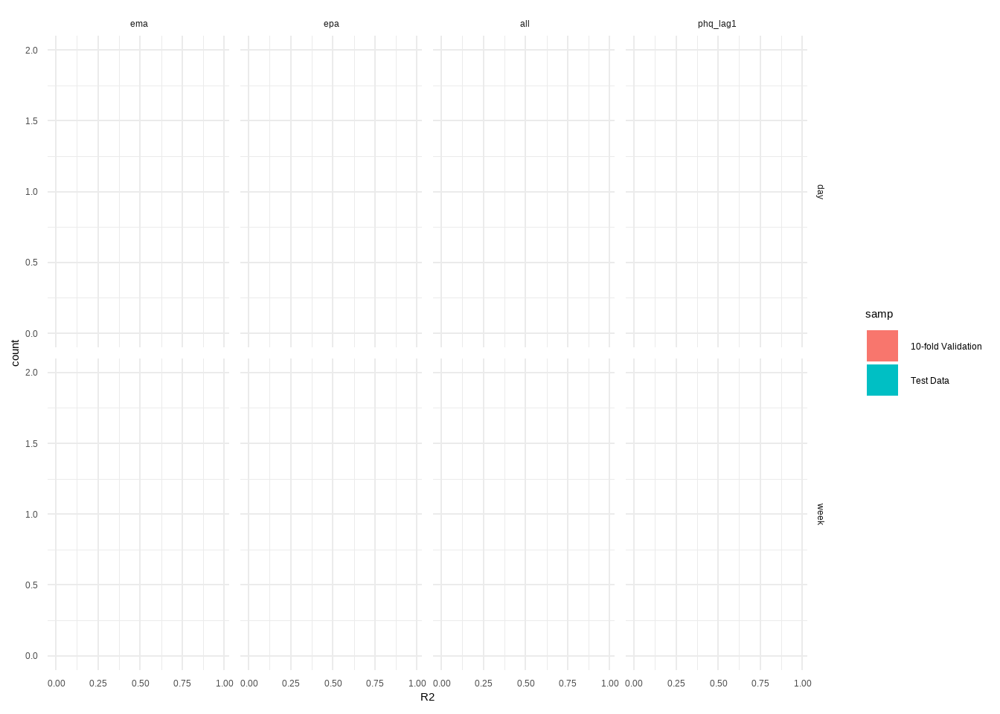

4 Results
In this section, I create summary statistics and figures from the models we ran on the cluster. I first look at model performance statistics, look at idiographic estimates, and then make some plots for the paper.
# Data wrangling
library(data.table)
library(tidyverse)
# Stats
library(lmerTest)
library(emmeans)
library(caret)
# Plots
library(ggplot2)
library(ggtext)
library(ggbeeswarm)
library(gridExtra)
# Fonts
library(sysfonts)
library(showtext)
# Font stuffies
# font_add("fa", "figures/fa-regular-400.ttf")
font_add("SegoeUIEmoji", "C:/Windows/Fonts/seguiemj.ttf")
font_add("SegoeSymb", "C:/Windows/Fonts/seguisym.ttf")
font_add("SegoeIcons", "C:/Windows/Fonts/SegoeIcons.ttf")
theme_update(text = element_text(family = "SegoeIcons"))
showtext_auto()
# Functions
confidence_interval <- function(vector, interval) {
# Standard deviation of sample
vec_sd <- sd(vector)
# Sample size
n <- length(vector)
# Mean of sample
vec_mean <- mean(vector)
# Error according to t distribution
error <- qt((interval + 1)/2, df = n - 1) * vec_sd / sqrt(n)
# Confidence interval as a vector
result <- c("lower" = vec_mean - error, "upper" = vec_mean + error)
return(result)
}4.1 Model Performance
First check the model performance. I do this by loading the model results as csvs which contain the predictions and actual scores for each of the training and test set, then estimating the mean error (ME), mean absolute error (MAE), mean absolute percent error (MAPE), root mean square error (RMSE), and R^2. R^2 is our primary metric of interest here as its the easiest to interpret for psychologists (our target audience).
4.1.1 Training CV
# Load the results from the training CV
training_cv = Sys.glob("C:/Users/rayya/Nextcloud/FSW_WARN-D (Projectfolder)/group/raytut/projects/prediction_nomothetic/results/results_training*.csv")
# Read all results into a df
df_val = rbindlist(lapply(training_cv, fread))
df_val <- df_val %>%
mutate(source = factor(source, levels = c('ema','epa', 'all', "phq_lag1"))) %>%
group_by(sub_id, fold, model, source) %>%
mutate(n = 1:length(actual))
df_val %>%
group_by(fold, model, source) %>%
mutate(R2 = R2(predicted, actual)) %>%
group_by(model, source) %>%
summarise(R2_sd = sd(R2, na.rm=T)) -> train_r2sd## `summarise()` has grouped output by 'model'. You can override using the `.groups` argument.# Create a summary table
df_val_summ <- df_val %>%
group_by(model, source) %>%
arrange(model, source) %>%
mutate(predicted = round(predicted)) %>%
summarise(ME = (mean(predicted-actual)),
ME_CI_L = confidence_interval((predicted-actual), 0.95)[1],
ME_CI_U = confidence_interval((predicted-actual), 0.95)[2],
MAE = mean(abs(predicted-actual)),
MAPE = (mean(abs(predicted-actual)/actual))*100,
RMSE = RMSE(predicted, actual),
R2 = R2(predicted, actual)) %>%
mutate(across( c(ME, ME_CI_L, MAE, ME_CI_U, MAPE, RMSE, R2), ~round(.x, 2)))## `summarise()` has grouped output by 'model'. You can override using the `.groups` argument.4.1.2 Test Data
test_cv = Sys.glob("C:/Users/rayya/Nextcloud/FSW_WARN-D (Projectfolder)/group/raytut/projects/prediction_nomothetic/results/results_testing_*.csv")
# Read all results into a df
df_test = rbindlist(lapply(test_cv, fread), fill=T)
df_test <- df_test %>%
mutate(source = factor(source, levels = c('ema','epa', 'all', "phq_lag1"))) %>%
group_by(sub_id, fold, model, source) %>%
mutate(n = 1:length(actual)) %>%
ungroup()
df_test %>%
group_by(fold, model, source) %>%
mutate(R2 = R2(predicted, actual)) %>%
ungroup() %>%
group_by(model, source) %>%
summarise(R2_sd = sd(R2, na.rm=T)) -> testr2_sds## `summarise()` has grouped output by 'model'. You can override using the `.groups` argument.# Create a summary table
df_test_summ <- df_test %>%
group_by(model, source) %>%
arrange(model, source) %>%
mutate(predicted = round(predicted)) %>%
summarise(ME = (mean(predicted-actual)),
ME_CI_L = confidence_interval((predicted-actual), 0.95)[1],
ME_CI_U = confidence_interval((predicted-actual), 0.95)[2],
MAE = mean(abs(predicted-actual)),
MAPE = (mean(abs(predicted-actual)/actual))*100,
RMSE = RMSE(predicted, actual),
R2 = R2(predicted, actual)) %>%
mutate(across( c(ME, ME_CI_L, MAE, ME_CI_U, MAPE, RMSE, R2), ~round(.x, 2)))## `summarise()` has grouped output by 'model'. You can override using the `.groups` argument.# Add the folde R2 SDs and print summary
df_test_summ <- merge(df_test_summ, testr2_sds, by=c("model","source"))
df_test_summ4.2 Idiographic Model Performance
I also estimate the idiographic model performance, just doing R^2 here.
df_val$samp <- "10-fold Validation"
df_test$samp <- "Test Data"
df_idio <- rbind(df_val, df_test)
df_idio <- df_idio %>%
group_by(sub_id, model, source, samp) %>%
mutate(R2 = R2(predicted, actual)) %>%
distinct(sub_id, .keep_all=T)## Warning: There were 16 warnings in `mutate()`.
## The first warning was:
## ℹ In argument: `R2 = R2(predicted, actual)`.
## ℹ In group 5271: `sub_id = "s665990513"`, `model = "week"`, `source = ema`, `samp = "Test Data"`.
## Caused by warning in `cor()`:
## ! the standard deviation is zero
## ℹ Run `dplyr::last_dplyr_warnings()` to see the 15 remaining warnings.ggplot(df_idio, aes(x=R2, fill=samp)) +
geom_bar(breaks=seq(0, 1, by=0.1)) +
theme_minimal() +
facet_grid(model ~ source)## Warning in geom_bar(breaks = seq(0, 1, by = 0.1)): Ignoring unknown parameters: `breaks`## Warning: Removed 16 rows containing non-finite outside the scale range (`stat_count()`).
df_idio_sum <- Rmisc::summarySEwithin(df_idio, measurevar = "R2", withinvars = c("model", "source", "samp"), na.rm = T)## Automatically converting the following non-factors to factors: model, sampggplot(df_idio_sum, aes(y=R2, x=source, fill=samp, color=samp)) +
geom_bar(stat="summary", position=position_dodge2(), alpha=0.5) +
geom_point(stat="summary", position=position_dodge(0.9)) +
geom_errorbar(aes(ymin=R2-ci, ymax = R2+ci), position = position_dodge2()) +
theme_minimal() +
theme(axis.title.x = element_blank(), legend.title = element_blank()) +
facet_grid(model~.)## No summary function supplied, defaulting to `mean_se()`## No summary function supplied, defaulting to `mean_se()`
## No summary function supplied, defaulting to `mean_se()`
## No summary function supplied, defaulting to `mean_se()`
4.3 SHAP
Now I estimate the SHAP plots for feature contributions. I wrap this into a function that lets me plot a bit more easily and keep some visual consistency. The funciton will filter the data to reduce overhead memory usage, rank the SHAP values based on the absolute SHAP values, and then filter and plot the top 10 features. I do the data loading after setting-up the function to read all the SHAP values.
# Plotting functions
shap_plot <- function(shap_values, models='week', sources='ema', feats = 10, x_range=0.5){
# Filter and estimate abs values
df_temp <- shap_values[model == models & source == sources]
df_temp[, shap_mean := mean(abs(shap_fold_avg)), by = feature]
df_temp[, shap_order := frank(-abs(shap_mean), ties.method = "dense")]
df_temp[, shap_order := shap_order-1]
# Keep top features
df_temp_top <- df_temp[shap_order <= feats-1]
df_temp_top$feature_labs <- droplevels(df_temp_top$feature_labs)
df_temp_top$feature_labs <- fct_rev(factor(df_temp_top$feature_labs,
levels = unique(df_temp_top[order(shap_order)]$feature_labs)))
# Plot
plot = ggplot(df_temp_top, aes(x=shap_fold_avg, y = feature_labs)) +
geom_vline(xintercept = 0) +
geom_quasirandom(aes(color = shap_fold_avg), alpha=0.2) +
scale_y_discrete( limits = levels(df_temp_top$feature_labs),
labels = levels(df_temp_top$feature_labs)) +
scale_x_continuous(breaks = seq(-1, 1, by=0.5)) +
scale_color_gradient2(low = "blue", mid='yellow', high = "red", midpoint = 0) +
labs(y = "", x = "SHAP Values") +
theme_light() +
theme( plot.title=element_text(face = "bold", hjust = 0.5, size=7),
legend.position='none',
axis.text.y = element_text(family = "SegoeSymb", size=6.5, angle=45, margin = margin(l=25)),
axis.title.x = element_text(size=7, margin = margin(t=10, b=10)),
axis.text.x = element_text( size=6.5)) +
coord_cartesian(xlim=c(-x_range,x_range))
return(plot)
}
shap_plot_ts<- function(shap_values, models, sources){
# Filter and estimate abs values
df_temp <- shap_values[model == models & source == sources]
df_temp[, shap_mean := mean(abs(shap_fold_avg)), by = feature]
df_temp[, shap_order := frank(-abs(shap_mean), ties.method = "dense")]
df_temp[,step := step]
# Keep top features
df_temp_top <- df_temp[shap_order <= 10]
df_temp_top$feature_labs <- droplevels(df_temp_top$feature_labs)
df_temp_top$feature_labs <- factor(df_temp_top$feature_labs,
levels = unique(df_temp_top[order(shap_order)]$feature_labs))
# Plot
plot <- ggplot(df_temp_top, aes(x=step, y = shap_fold_avg)) +
geom_hline(yintercept = 0) +
geom_quasirandom(aes(color = shap_fold_avg), size = 0.2) +
scale_color_viridis_c() +
labs(y = "SHAP Values", x = "Time Steps") +
theme_light() +
theme( plot.title=element_text(face = "bold", hjust = 0.5),
legend.position='none',
axis.text = element_text(size=18),
axis.title = element_text(size=21),
strip.text = element_text(family = "SegoeSymb", size=21)) +
facet_wrap(feature_labs~., nrow=2, ncol=5)
return(plot)
}# Read in the Python Estimated SHAP values
shap_values = Sys.glob("C:/Users/rayya/Nextcloud/FSW_WARN-D (Projectfolder)/group/raytut/projects/prediction_nomothetic/results/shap_values_*.csv")
shap_values = rbindlist(lapply(shap_values, fread), fill=T)
setDT(shap_values)
# Convert to a long dataframe
shap_values <- melt(shap_values,
id.vars = c("sample", "step", "fold", "source", "model"),
variable.name = "feature", value.name = "shap")
# Average across folds
shap_values[, shap_fold_avg := mean(shap, na.rm=T), by = c('sample', 'step', 'model', 'source', 'feature')]
shap_values[, fold := NULL]
shap_values[, shap := NULL]
shap_values <- unique(shap_values)
# Make prettier labels
variable_codes <- c(
"sleep_qual_m", "sleep_rest_m", "outlook_m",
"overwhelm_d", "motivated_d", "stressed_d", "ruminate_d", "tired_d", "nervous_d", "sad_d", "relaxed_d", "cheerful_d", "irritable_d",
"activity_enjoy_d", "offline_enjoy_d", "online_enjoy_d",
"discomfort_e", "emo_reg_e", "useful_e", "neg_exp_e", "pos_exp_e",
"neg_exp_cat_e_1", "neg_exp_cat_e_2", "neg_exp_cat_e_3", "neg_exp_cat_e_10",
"neg_exp_cat_e_4", "neg_exp_cat_e_5", "neg_exp_cat_e_6", "neg_exp_cat_e_11",
"neg_exp_cat_e_7", "neg_exp_cat_e_8", "neg_exp_cat_e_12",
"pos_exp_cat_e_1", "pos_exp_cat_e_2", "pos_exp_cat_e_3", "pos_exp_cat_e_10",
"pos_exp_cat_e_4", "pos_exp_cat_e_5", "pos_exp_cat_e_6", "pos_exp_cat_e_11",
"pos_exp_cat_e_7", "pos_exp_cat_e_8", "pos_exp_cat_e_12",
"substance_e_1", "substance_e_2", "substance_e_3", "substance_e_4", "substance_e_5", "substance_e_6",
"substance_e_7", "substance_e_8", "substance_e_9",
"hr_mean", "hr_min", "hr_max", "hr_sd",
"stress_mean", "stress_sd", "stress_min", "stress_max",
"intraday_activity_cals", "intraday_steps", "intraday_active_seconds",
"intraday_met_value", "intraday_intensity_mean", "intraday_intensity_max",
"body_bat_mean", "body_bat_sd", "body_bat_min", "body_bat_max",
"sleep_hr_mean", "sleep_hr_median", "sleep_hr_skew", "sleep_hr_kurt",
"sleep_hr_min", "sleep_hr_max", "sleep_hr_sd", "sleep_start",
"sleep_end", "sleep_dur_tot_s"
)
# Have to them one line at a time unfortsh
variable_labels <- c(
"🛏Sleep Quality","🛏Rested", "🛏Outlook",
"☀Overwhelm", "☀Motivated", "☀Stressed", "☀Ruminate", "☀Tired","☀Nervous",
"☀Sad", "☀Relaxed", "☀Cheerful", "☀Irritable", "☀Activity", "☀Social (offline)", "☀Social (online)",
"🌙Discomfort", "🌙Emo. Regulation", "🌙Useful",
"🌙Neg. Experience", "🌙Pos. Experience", "🌙Neg. Wellbeing (Phys)",
"🌙Neg. Wellbeing (Ment)", "🌙Neg. Finances", "🌙Neg. Education/Work",
"🌙Neg. Home", "🌙Neg. Leisure", "🌙Neg. Love Life",
"🌙Neg. Social Life", "🌙Neg. Relationships (Family)", "🌙Neg. Experiences (Friends/Family)",
"🌙Neg. Society/Politics",
"🌙Pos. Wellbeing (Phys)", "🌙Pos. Wellbeing (Ment)", "🌙Neg. Finances",
"🌙Pos. Education/Work", "🌙Pos. Home", "🌙Pos. Leisure", "🌙Pos. Love Life", "🌙Pos. Social Life",
"🌙Pos. Relationships (Family)", "🌙Pos. Experiences (Friends/Family)", "🌙Pos. Society/Politics",
"🌙Caffeine", "🌙Tobacco", "🌙Alcohol", "🌙Cannabis",
"🌙Ecstasy", "🌙Amphetamines", "🌙Cocaine", "🌙 Other Subs.", "🌙No Subs.",
"️☀HR Mean⌚",
"☀HR Min⌚",
"☀HR Max⌚️",
"☀HR SD⌚️",
"☀Stress Mean⌚",
"☀Stress SD⌚", "☀Stress Min⌚", "☀Stress Max⌚️",
"☀Calories⌚", "☀Steps⌚", "☀Active Time (s)⌚",
"☀MET Value⌚", "☀Activity Intensity⌚", "☀Maximum Intensity⌚",
"☀Body Bat. Mean⌚️", "☀Body Bat. SD⌚", "☀Body Bat. Min⌚", "☀Body Bat. Max⌚",
"🛏Sleep HR Mean⌚️",
"🛏Sleep HR Median⌚️",
"🛏Sleep HR Skew⌚️",
"🛏Sleep HR Kurtosis⌚️",
"🛏Sleep HR Min⌚️",
"🛏Sleep HR Max⌚️",
"🛏Sleep HR SD⌚️",
"🛏Sleep Start⌚️",
"🛏Sleep End⌚",
"🛏Sleep Duration⌚️")
# Make a label column for parsing
shap_values$feature_labs <- factor(shap_values$feature,
levels=variable_codes,
labels=variable_labels)4.3.1 Top 10 Daily
# Set up the three plots
plot_d1 <- shap_plot(shap_values, "day", "ema", 10, 0.8) +
labs(title = "Smartphone Self-Report (EMA)")
plot_d2 <- shap_plot(shap_values, "day", "epa", 10, 0.8) +
labs(title = "Smartwatch Passive Sensing")
plot_d3 <- shap_plot(shap_values, "day", "all", 10, 0.8) +
labs(title = "Combined Model")
# Arrange them and save em
day_plot <- grid.arrange(plot_d1, plot_d2, plot_d3, ncol = 3)## Orientation inferred to be along y-axis; override with `position_quasirandom(orientation = 'x')`
## Orientation inferred to be along y-axis; override with `position_quasirandom(orientation = 'x')`
## Orientation inferred to be along y-axis; override with `position_quasirandom(orientation = 'x')`
ggsave("../figures/figure_1_daily_mods.svg", plot=day_plot, dpi=600, width=18, height=12, units="cm", device=svglite::svglite)
ggsave("../figures/figure_1_daily_mods.png", plot=day_plot, dpi=600, width=18, height=12, units="cm", device=ragg::agg_png)Then we check the SHAP values per timestep.

4.3.2 Top 10 Weekly
Check the overall SHAP values
# Set up the three plots
plot_w1 <- shap_plot(shap_values, "week", "ema", 10, 0.8) +
labs(title = "Smartphone Self-Report (EMA)")
plot_w2 <- shap_plot(shap_values, "week", "epa", 10, 0.8) +
labs(title = "Smartwatch Passive Sensing")
plot_w3 <- shap_plot(shap_values, "week", "all", 10, 0.8) +
labs(title = "Combined Model")
# Arrange em and save em
week_plot <- grid.arrange(plot_w1, plot_w2, plot_w3, ncol = 3) ## Orientation inferred to be along y-axis; override with `position_quasirandom(orientation = 'x')`
## Orientation inferred to be along y-axis; override with `position_quasirandom(orientation = 'x')`
## Orientation inferred to be along y-axis; override with `position_quasirandom(orientation = 'x')`
ggsave("../figures/figure_2_weekly_mods.svg", week_plot, dpi=600, width=18, height=12, units="cm", device=svglite::svglite)
ggsave("../figures/figure_2_weekly_mods.png", week_plot, dpi=600, width=18, height=12, units="cm", device=ragg::agg_png)Now check the SHAP Values per timestep.

4.4 Supp Analysis
4.4.1 PHQ-9 Autoregressive Model
We investigate the PHQ-9 model performance visually to see whats going on in the weekly models.
df_val_phq_lead <- df_test %>%
filter( model == 'week' & source == "phq_lag1") %>%
group_by(sub_id, fold) %>%
mutate(phq_mean = mean(actual, na.rm=T)) %>%
mutate(predicted_lead = lead(predicted,n = 1)) %>%
select(sub_id, model,n, source, actual, predicted_lead, phq_mean) %>%
rename(predicted = predicted_lead) %>%
mutate(source = "phq_lead")## Adding missing grouping variables: `fold`df_val_phq_combi <- df_test %>%
filter( model == 'week' & (source == "all" | source == "phq_lag1")) %>%
group_by(sub_id, fold) %>%
mutate(phq_mean = mean(actual, na.rm=T)) %>%
select(sub_id, model, n, source, actual, predicted, phq_mean)## Adding missing grouping variables: `fold`df_val_phq_combi <- rbind(df_val_phq_combi, df_val_phq_lead)
df_val_phq_combi <- df_val_phq_combi %>%
ungroup() %>%
pivot_longer(cols=c(predicted, actual), values_to = "phq", names_to = "score") %>%
mutate(predictors = factor(source, levels=c("all", "phq_lag1", "phq_lead"), labels=c("All", "Lagged PHQ", '"Unlagged" PHQ')),
score = factor(score, levels = c("predicted", "actual"), labels=c("Predicted", "Actual")))
# Subset random subs
set.seed(192)
random_subs = sample(unique(df_val_phq_combi$sub_id),9)
df_val_phq_combi <- df_val_phq_combi[df_val_phq_combi$sub_id %in% random_subs,]
# Plot
ggplot(df_val_phq_combi, aes(x=n, y=phq, color=score) ) +
geom_line(stat = 'summary') +
geom_hline(aes(yintercept=phq_mean), linetype='dashed') +
facet_grid(sub_id~predictors) +
labs(y = "PHQ-9 sum score", x ="Time steps") +
theme_light() +
theme(legend.position="bottom", legend.title =element_blank(),
text = element_text(size=32), strip.text = element_text(size=22)) ## Warning: Removed 90 rows containing non-finite outside the scale range (`stat_summary()`).## No summary function supplied, defaulting to `mean_se()`
## No summary function supplied, defaulting to `mean_se()`
## No summary function supplied, defaulting to `mean_se()`
## No summary function supplied, defaulting to `mean_se()`
## No summary function supplied, defaulting to `mean_se()`
## No summary function supplied, defaulting to `mean_se()`
## No summary function supplied, defaulting to `mean_se()`
## No summary function supplied, defaulting to `mean_se()`
## No summary function supplied, defaulting to `mean_se()`
## No summary function supplied, defaulting to `mean_se()`
## No summary function supplied, defaulting to `mean_se()`
## No summary function supplied, defaulting to `mean_se()`
## No summary function supplied, defaulting to `mean_se()`
## No summary function supplied, defaulting to `mean_se()`
## No summary function supplied, defaulting to `mean_se()`
## No summary function supplied, defaulting to `mean_se()`
## No summary function supplied, defaulting to `mean_se()`
## No summary function supplied, defaulting to `mean_se()`
## No summary function supplied, defaulting to `mean_se()`
## No summary function supplied, defaulting to `mean_se()`
## No summary function supplied, defaulting to `mean_se()`
## No summary function supplied, defaulting to `mean_se()`
## No summary function supplied, defaulting to `mean_se()`
## No summary function supplied, defaulting to `mean_se()`
## No summary function supplied, defaulting to `mean_se()`
## No summary function supplied, defaulting to `mean_se()`
## No summary function supplied, defaulting to `mean_se()`
ggsave("../figures/sm_figure_1_weekly_unlagged.svg", dpi=300, width=18, height=22, units="cm", device=svglite::svglite)## Warning: Removed 90 rows containing non-finite outside the scale range (`stat_summary()`).## No summary function supplied, defaulting to `mean_se()`
## No summary function supplied, defaulting to `mean_se()`
## No summary function supplied, defaulting to `mean_se()`
## No summary function supplied, defaulting to `mean_se()`
## No summary function supplied, defaulting to `mean_se()`
## No summary function supplied, defaulting to `mean_se()`
## No summary function supplied, defaulting to `mean_se()`
## No summary function supplied, defaulting to `mean_se()`
## No summary function supplied, defaulting to `mean_se()`
## No summary function supplied, defaulting to `mean_se()`
## No summary function supplied, defaulting to `mean_se()`
## No summary function supplied, defaulting to `mean_se()`
## No summary function supplied, defaulting to `mean_se()`
## No summary function supplied, defaulting to `mean_se()`
## No summary function supplied, defaulting to `mean_se()`
## No summary function supplied, defaulting to `mean_se()`
## No summary function supplied, defaulting to `mean_se()`
## No summary function supplied, defaulting to `mean_se()`
## No summary function supplied, defaulting to `mean_se()`
## No summary function supplied, defaulting to `mean_se()`
## No summary function supplied, defaulting to `mean_se()`
## No summary function supplied, defaulting to `mean_se()`
## No summary function supplied, defaulting to `mean_se()`
## No summary function supplied, defaulting to `mean_se()`
## No summary function supplied, defaulting to `mean_se()`
## No summary function supplied, defaulting to `mean_se()`
## No summary function supplied, defaulting to `mean_se()`ggsave("../figures/sm_figure_1_weekly_unlagged.png", dpi=300, width=18, height=22, units="cm", device=ragg::agg_png)## Warning: Removed 90 rows containing non-finite outside the scale range (`stat_summary()`).## No summary function supplied, defaulting to `mean_se()`
## No summary function supplied, defaulting to `mean_se()`
## No summary function supplied, defaulting to `mean_se()`
## No summary function supplied, defaulting to `mean_se()`
## No summary function supplied, defaulting to `mean_se()`
## No summary function supplied, defaulting to `mean_se()`
## No summary function supplied, defaulting to `mean_se()`
## No summary function supplied, defaulting to `mean_se()`
## No summary function supplied, defaulting to `mean_se()`
## No summary function supplied, defaulting to `mean_se()`
## No summary function supplied, defaulting to `mean_se()`
## No summary function supplied, defaulting to `mean_se()`
## No summary function supplied, defaulting to `mean_se()`
## No summary function supplied, defaulting to `mean_se()`
## No summary function supplied, defaulting to `mean_se()`
## No summary function supplied, defaulting to `mean_se()`
## No summary function supplied, defaulting to `mean_se()`
## No summary function supplied, defaulting to `mean_se()`
## No summary function supplied, defaulting to `mean_se()`
## No summary function supplied, defaulting to `mean_se()`
## No summary function supplied, defaulting to `mean_se()`
## No summary function supplied, defaulting to `mean_se()`
## No summary function supplied, defaulting to `mean_se()`
## No summary function supplied, defaulting to `mean_se()`
## No summary function supplied, defaulting to `mean_se()`
## No summary function supplied, defaulting to `mean_se()`
## No summary function supplied, defaulting to `mean_se()`